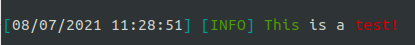

njs-logger


Overview
njs-logger è una libreria per Node.js incentrata sulla gestione e la manipolazione dei logs. Questa permette, attraverso poche righe di configurazione e di utilizzo, di salvare su determinati file e di mostrare a video eventuali errori o altre informazioni utili.
TODO: inserire immagine della console (molto colorata)
Features
- Flessibile al 100%
- Possibilità di zippare le cartelle dei log per risparmiare spazio sul disco
- Invio di email nel caso in cui si dovessero scatenare determinati eventi [guarda le impostazioni]
- Totale gestione dei log e delle cartelle
- Possibilità di visualizzare messaggi con determinati colori
Usage
Installation
It is possible to install this library with npm:
npm install nsj-logger
To import the library in your project:
const logger = require('njs-logger')();
Colors
è possibile personalizzare la propria console attraverso i seguenti colori:
&0: black&c: red&a: green&e: yellow&9: blue&5: magenta&b: cyan&f: white&r: color reset&k: hides the characters&x: intermittent character&z: blink&n: underline
Per utilizzare questi colori è sufficiente inserire il codice illustrato nella lista sopra stante all'interno di una String di una funzione di log (ex: error, debug, log, ecc.).
Esempio:
logger.log("&aThis &fis a &ctest!");
Levels
I livelli indicano le funzioni richiamabili attravero l'oggetto creato, come mostrato in questa sezione, per la generazione dei log. In particolar modo ogni livello ha determinati attributi, come illustrato nella sezione delle impostazioni [clicca qui], che permettono di gestire a pieno le funzionalità offerte.
In sostanza, quindi, ad ogni livello è associata una funzione richiamabile.
Per esempio, nelle impostazioni di default è presente un livello debug, infatti è possibile eseguire la seguente funzione:
logger.debug("This is a test!");
Targets
TODO: da fare
TODO: mettere link alla documentazione
Variables
La libreria implementa un sistema di gestione della variabili inserite all'interno delle stringhe passate come input alla funzione di log.
Esempio:
logger.log("The user with id: %user_id% is logged in.", {user_id: 69}); logger.warn("%database% -> %table%", "database", {database: "portfolio", table: "staff"}); // Console: "[07/07/2021 03:47:39] [INFO] The user with id: 69 is logged in." // "[07/07/2021 03:47:39] [WARN] [DATABASE] portfolio -> staff"
Settings
Quando la libreria viene importata è possibile specificare alcune impostazione in base alle proprie esigenze:
è possibile trovare lo JSON schema dell'oggetto a questo documento.
debug
Data type:
boolean
Default value:false
Impostazione utilizzata per il debug della libreria. Se impostato a true verranno visualizzati messaggio utili allo sviluppo del progetto.
dateFormat
Data type:
String
Default value:&b[&rGG/MM/YYYY hh:mm:ss&b]&r
Formato della data da visualizzare nella console e nei file di Log. è possibile creare una combinazione per la realizzazione di un formato custom attraverso i seguenti parametri:
ss: secondimm: minutihh: oreGG: giornoMM: numero del mese (ex: 1 per gennaio)YYYY: anno in formato con quattro cifre (ex: 2021)YY: anno in formato con due crifre (ex: 21)
I colori seguono lo standard illustrato in questa sezione.
logDirectory
Data type:
String
Default value:logs/
Indica dove dovranno essere salvati i log.
zipFolders
Data type:
boolean
Default value:true
Specifica se, all'inizio di ogni mese, bisogna zippare le cartelle dei mesi precedenti per salvare spazio sul disco.
moths
Data type:
array
Default value:["January", "February", "March", "April", "May", "June", "July", "August", "September", "October", "November", "December"]
Array che indica i 12 mesi dell'anno, utilizzati per salvare al loro interno i file di log divisi per i giorni del mese.
levels
Data type:
object
Default value:{log: {...}, warn: {...}, error: {...}, debug: {...}}
Questo oggetto specifica i livelli dei log, e il nome associato all'oggetto sarà il nome della funzione utilizzata per invocare il livello stesso.
Ogni livello deve seguire il seguente JSON Schema:
"...": { "type": "object", "properties": { "format": { "type": "string" }, "writeToLogFile": { "type": "boolean" }, "sendMail": { "type": "boolean" } } }
In altre parole, ogni oggetto livello deve avere tre attributi:
format: stringa che identifica il livello e che verrà mostrata nel file di log e nella console (ex: nel livello log il format è il seguente:[&b[&aINFO&b]&r]).writeToLogFile: boolean che indica se la stringa stampata a video dovrà anche essere scritta nel file dei log.sendMail: boolean che indica se bisogna inviare una email quando il log corrente sarà invocato. Se impostato atrue, è obbligatorio settare le impostazioni relative alla mail (vedi questa sezione).
targets
Data type:
object
Default value:{database: {"format": "&b[&cDATABASE&b]&r"}, website: {"format": "&b[&eWEBSITE&b]&r"}, email: {"format": "&b[&5EMAIL&b]&r"}}
I targets vengono utilizzati per indicare, come dice il nome stesso, il target del log. In questo modo sarà più semplice identificare un determinato servizio, per esempio, come l'email, il sito web o un eventuale errore del database.
Data type:
object
Default value:{ "template": "./views/defaultEmail.ejs", "subject": null, "to": [], "from": null, "host": null, "port": 587, "secure": false, "pool": false, "auth": null}
Oggetto che indica le impostazioni per l'invio di email qualora fosse stato specificato in un determinato level.
In particolare:
template[String]: indica il file con estensioneejs(vedi documentazione), utilizzato per definire il template dell'email. I parametri passati al file ejs sono i seguenti:message: messaggio specificatofrom: indica la stringa dell'attributomail.fromdate: data corrente
subject[String]: oggetto dell'emailto[array]: array di String, utilizzato per specificare le email a cui inviare la notificafrom[String]: See the documentationhost[String]: IPV4 o DNS del server SMTPport[number]: porta del server SMTPsecure[boolean]: If true the connection will use TLS when connecting to server. If false (the default) then TLS is used if server supports the STARTTLS extension. In most cases set this value to true if you are connecting to port 465. For port 587 or 25 keep it false.pool[boolean]: set to true to use pooled connections (defaults to false) instead of creating a new connection for every email.auth[object]: oggetto che indica le credenziali di accesso al server SMTP. In questo oggetto dovranno essere specificati due attributi:user[String]: utente per accedere al server SMTP (tipicamente l'email utilizzata per inviare la password).password[String]: password per accedere al server SMTP (tipicamente la password per accedere all'email).